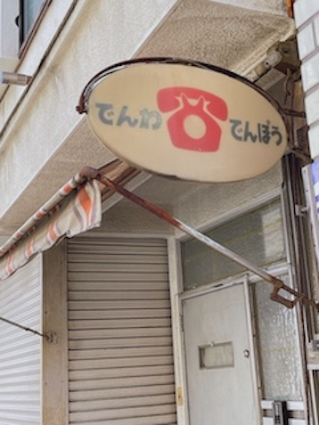

[課題]看板・サインの観察

10/11 神奈川県横浜市中区自宅周辺 撮影者：自分
昔ながらの「でんわ・でんぽう」の看板。
現在はこの写真の下に公衆電話と郵便ポストがある。
10/10 神奈川県横浜市中区自宅周辺 撮影者：自分
からあげ専門店の看板。
オープン前のチラシ曰く「見た目以上に真面目に作っています」とのこと。
数年前 新潟県新潟市西区実家周辺 撮影者：自分
ラーメン屋の宣伝の看板。
この看板から店まで約13kmもある。
食べログの評価は3.53と結構高い。